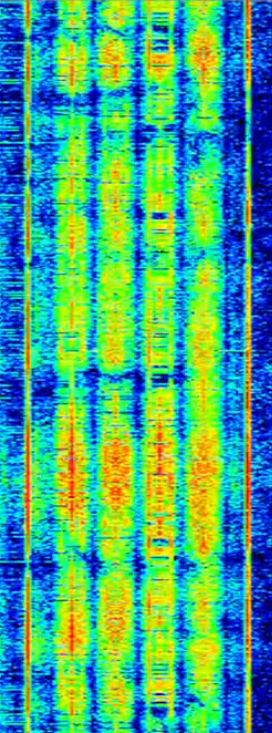

Click here to go back to the main page.
| Name: |
CIS-4 Signabroam ID: MD4 |
|---|---|
| Frequencies | 6970 kHz |
| Status | Active |
| Voice | Male, Female |
| Mode | USB, FSK 4x2 |
| Location | Russia |
| Associated Stations | FGKT |
| Description | CIS-4 is a recently discovered modem the 17/06/2026 on FGKT and is believed to be a new or unofficial version of the CIS modems. It operates on 6970 kHz and uses USB with FSK 4x2 modulation. The modem is supposely active and has been observed |
| Media |
Image footage of presumed CIS-4 on 6970 kHz  Live footage from @ShortwaveStuff on YouTube |